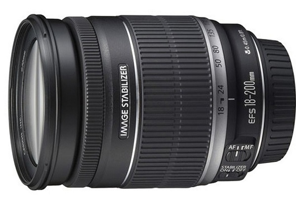

 覆盖从广角到远摄焦段约11倍的高变焦比、搭载强大手抖动补偿机构的高倍率变焦镜头。专为采用APS-C画幅图像感应器的EOS数码单反相机研发而成。换算成35mm规格，可获得接近于受欢迎款EF 28-300mm f/3.5-5.6L IS USM的焦段效果。手抖动补偿机构IS影像稳定器的效果最大相当于提高约4级快门速度，使用以35mm规格换算相当于约320mm的远摄端也可轻松手持拍摄。平日的抓拍以及旅行拍摄自不待言，还可充分利用远摄区域进行运动摄影以及自然摄影等。同时，还适于尽量减少携带器材的登山摄影等领域。由于采用了内对焦方式，对焦时镜头的长度不会发生变化。镜头前部不会发生转动，十分易于握持。约11倍变焦比的强大威力，实现了拍摄领域的广泛性和视角变化的丰富性。即使在拍摄位置受到限制的情况下，也可获得想要的构图。不但能将风光等拍得很广阔、雄伟，充分使用远摄端时也能将被摄体拍得生动、有力，其使用方法多种多样。
| 镜头焦距 | 18-200mm |
|---|---|
| APS-C画幅下的35mm规格换算焦距 *1 | 约29-320mm |
| 镜头结构 | 12组16片 |
| 光圈叶片 | 6片（圆形光圈） |
| 最小光圈 *2 | 22-38 |
| 最近对焦距离 | 约0.45米 |
| 最大放大倍率 *3 | 约0.24倍 |
| 驱动系统 | DC马达 |
| 手抖动补偿效果 | 约4级 |
| 滤镜直径 | 72毫米 |
| 最大直径及长度 | 约Φ78.6×102毫米 |
| 重量 | 约595克 |